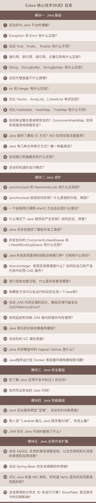

Java核心技术36讲
专栏简介
Java 的诞生已经超过了 20 年。一直以来，Java 以其语法简单，开发者可以快速上手，适应众多领域，具有跨平台能力等特性，吸引了无数程序员学习和使用。基于 Java 优秀的特性和庞大的使用基础，各大公司对 Java 工程师的需求也是源源不断。
但作为面试者，想进入 BAT 并成长为一名高级 Java 工程师却没那么容易。虽然面试者具备了一定的工作年限要求，也长期使用 Java 语言进行开发，但面试时，面对刨根问底的提问，经常感觉 get 不到面试官的点，自己回答的也是马马虎虎，甚至无法完整描述自己开发过的系统或者使用过的技术，因此也就很难得到满意的面试结果。
那如何才能在 Java 面试中做到游刃有余呢？本专栏就从大厂面试考察的知识点和能力出发，精选出 36 道 Java 面试题，每期针对 1 道题目，不仅给出面试的典型回答和考点分析，还会剖析知识点，将其讲清讲透，让你彻底领悟题目背后所考察的能力，帮你梳理复习 Java 知识体系。
杨晓峰，前 Oracle 北京 Java 平台部门，首席工程师，OpenJDK Committer，从 JDK 8 开始参与了 JDK 的开发和测试工作，曾领导 Java 核心类库北京团队，主要负责前沿版本的核心类库新特性相关任务。专注于 Java 以及其他编程语言的新特性，尤其是在云计算等前沿领域的应用和演进。
专栏模块
专栏共 36 期，分为 5 大模块。
- Java 基础：将围绕 Java 语言基本特性和机制，由点带面，帮你构建牢固的 Java 技术功底。
- Java 进阶：主要将围绕并发编程、Java 虚拟机等领域展开，助你攻坚大厂 Java 面试的核心阵地。
- Java 应用开发扩展：将聚焦数据库编程、主流开源框架、分布式开发等，让你掌握 Java 开发的十八般兵器。
- Java 安全基础：帮助你理解常见的应用安全问题和处理方法，掌握如何写出符合大厂规范的安全代码。
- Java 性能基础：帮助你掌握相关工具、方法论与基础实践。
专栏详细目录

适宜人群
有面试 / 晋升需求的 Java 程序员；希望夯实 Java 基础的程序员；团队 Leader；面试官。